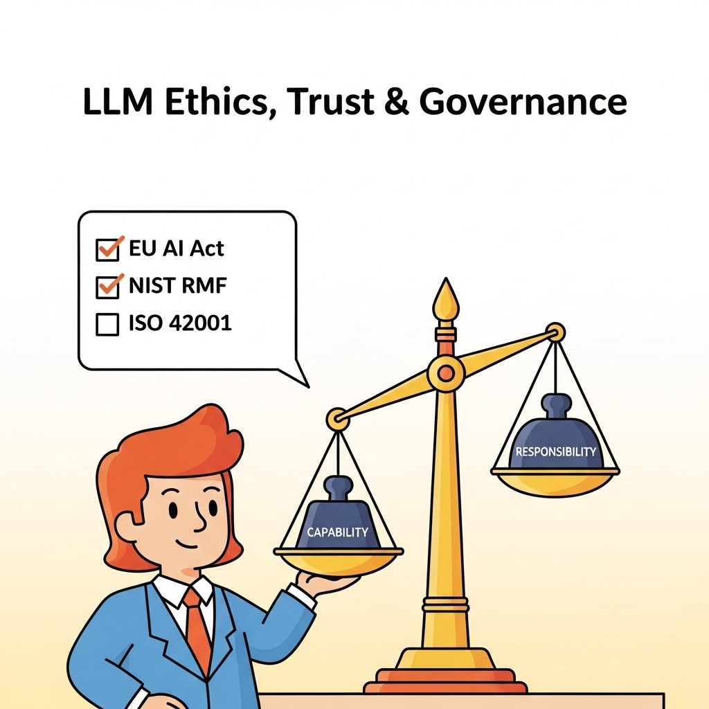

Part Overview
Bias and hallucination, provenance and transparency, regulation and compliance, frontier safety.
Big Picture
Bias and hallucination, provenance and transparency, regulation and compliance, frontier safety.
Chapters
What's Next?
This part begins with Chapter 52: Bias, Fairness & Hallucinations. Each chapter builds on the previous one, so we recommend reading Part XI in order.